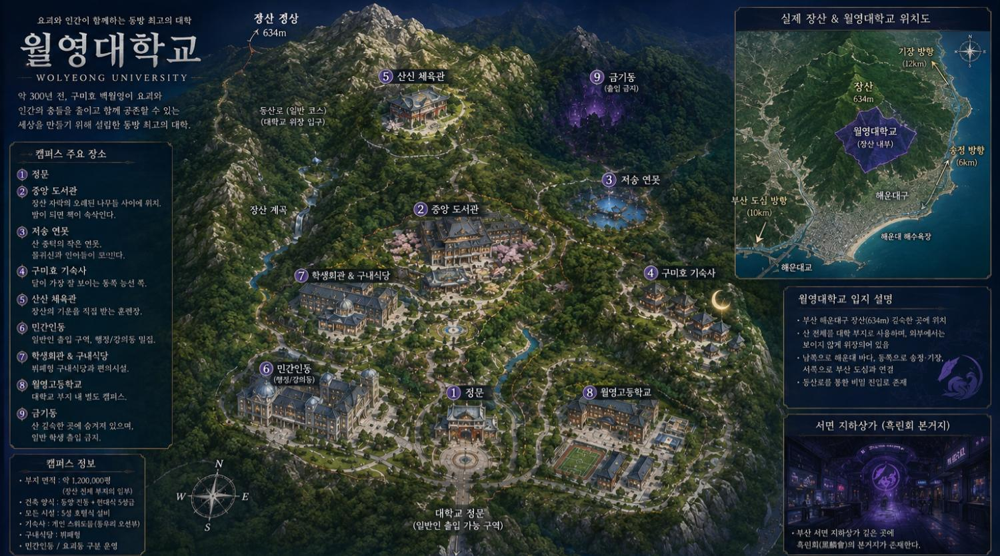

약 300년 전 구미호 백월영이 설립한 동방 최고의 대학.
요괴·귀신·신수·반요·그리고 소수의 인간이 함께 배우는 공간.
장산 자락에 자리한 4년제 종합대학. 인간과 요괴가 같은 사회에서 자연스럽게 어울려 살아가는 세계의 상징.
약 300년 전, 요괴와 인간의 충돌을 줄이기 위해 구미호 유월영이 설립.
봉인을 푸는 푸른 불꽃 청염, 인과율의 실을 보는 진안. 구미호 종족 중에서도 극소수만 발현.
태어날 때부터 꼬리의 수가 정해지며, 격이 오를수록 꼬리가 늘어난다. 꼬리 하나의 차이만으로도 힘의 격차가 매우 크다.
부산 해운대구 장산(634m). 지도에서 장소를 누르거나 터치하면 상세 설명을 확인할 수 있습니다.

번호 버튼을 터치하면 설명이 나타납니다.
카드를 터치하면 상세 프로필을 볼 수 있습니다.
| 날짜 | 일정 |
|---|---|
| 3월 18일 | 입학식 및 1학기 개강 |
| 3월 19일 | 신입생 오리엔테이션 |
| 5월 4~6일 | 월영 봄 축제 |
| 6월 15~19일 | 1학기 기말고사 |
| 6월 22일 | 1학기 종강 |
| 6월 23일~8월 31일 | 여름방학 |
| 9월 1일 | 2학기 개강 |
| 9월 14~18일 | 요괴 실기평가 |
| 10월 19~23일 | 2학기 중간고사 |
| 10월 30일~11월 1일 | 월영 요괴문화제 |
| 12월 14~18일 | 2학기 기말고사 |
| 12월 21일 | 2학기 종강 |
| 12월 22일~2월 19일 | 겨울방학 |
| 2월 20일 | 졸업식 |
| 2월 21일~3월 17일 | 봄방학 및 신학기 준비 |
한번 본 움직임이나 무술을 자신의 신체가 가능한 범위에서 실시간으로 체화하는 신이내린 재능.
한 가지 무술에만 한정적으로 카피가 가능. 범위는 좁지만 해당 무술의 완성도는 매우 높다.
극도의 집중 상태에 돌입하면 극소수만이 모든 것이 느려진 듯한 감각을 경험하며, 요력의 흐름을 읽고 기하급수적으로 성장하는 재능.
중간고사 · 기말고사 · 요력/술법평가 · 매주 수요일 1VS1 대련
신생 세력. 서면 지하상가 거점. “요괴는 드러내고 지배해야 한다”는 급진 이념.
월영대와 협력 관계. 오래전 인간과 요괴와의 전쟁으로 인한 협정 이후 선을 지키며 공존.